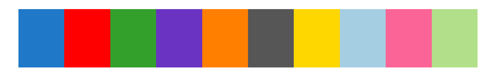

This post reviews how and when I use my favorite color palettes in R.
Code
library(tidyverse); theme_set(theme_light())par(bg ="#F2F2F2",mar =c(1,4.5,.5,.5)+.1,col.lab ="#222222")pals::pal.bands(pals::viridis, pals::cividis, pals::coolwarm, pals::cols25(n =25),labels =c("General continuous", 'Centered on zero,\ndiverging to\n two categories','Centered on zero,\ndiverging to\n"low" and "high"',"Categorical"),n =250)
Code
preview_palette =function(pal, n =250) {par(bg =rgb(0,0,0,0),mar =c(0,0,0,0),col.lab ="#222222") pals::pal.bands(pal, n = n, labels ="")}
These are all easily available using the excellent pals package by Kevin Wright, whose vignette is great for scrolling through to find case-specific palettes and the pal.bands() function I use throughout this post to preview palettes.
Statement of values on color palettes
It’s worth overviewing the boxes I’d like a candidate color palette to check, which usually aren’t all simultaneously achievable:
visually appealing
accessible to color-blind or otherwise impaired viewers
simple to implement (for me, this means it’s built into ggplot2)
the colors chosen reinforce the meaning of the data (I’ll elaborate on this)
and specifically for discrete palettes:
the colors are highly visually distinct, yet allow for large numbers of categories
the colors are easy to verbally describe
as an anti-example, the default ggplot2 colors for two categories are:
#F8766D which I’ve heard described as pink, red, orange, clay, salmon, …
#00BFC4 aka blue, teal, cyan, turquoise, aquamarine, green (???), …
This may seem like a persnickety point, but I’ve been in meetings where different individuals were arguing over the meaning of a plot for long periods of time before realizing they were using different words to describe the color of data groups they had been arguing over.
Tour of winners
Viridis
Code
preview_palette(pals::viridis)
Easy to use (see ?ggplot2::scale_color_viridis_c), visually appealing, and apparently pretty good in terms of accessbility. My only qualm with Viridis (sometimes) is that it ends on bright yellow, which can sometimes lead to the deadly sin of “yellow dots on a white background”:
Code
p =ggplot(mtcars, aes(disp, mpg)) +geom_point(aes(color = drat))p +scale_color_viridis_c()
Thankfully, this can be rectified by setting end = .92 to end the scale earlier:
Code
p +scale_color_viridis_c(end = .92)
Or with a dark background:
Code
p +scale_color_viridis_c() +theme_dark()
Cividis
Code
preview_palette(pals::cividis)
Some recommend this as the go-to general purpose color palette for continuous variables, and I think it’s okay in that role, but my eyes strongly latch onto the grey “center”, which sometimes isn’t helpful when the center of the data’s range doesn’t have any special meaning over any other quantile. That said, it’s optimized for improved accessibility over viridis. I like to use when a central value diverges into two categories e.g. a map of where foos versus bars live.
coolwarm
Code
preview_palette(pals::coolwarm)
Similar sort of use-case as cividis for me, but particularly when the two categories have a natural “high” versus “low” interpretation (rather than two unordered categories) e.g. a map of temperatures.
cols25
Runner ups
These are palettes that I use sometimes, but that come with some downside relative to the values stated above.
Parula
Code
preview_palette(pals::parula)

In my opinion, this is the most visually appealing continuous color scale out there, even over Viridis. Just look at it:
The downside is that I can never immediately remember the syntax for dropping a custom continuous color palette into ggplot. You have to use scale_*_gradientn(colors = pals::parula(n = 100)). This also involves setting a discrete number of colors for the values to get binned into, which seems reasonable at first, but can sometimes come back to bite you as visually-apparent aliasing if you don’t set n high enough. Setting it too high can create visual artifacts. Finally, this requires a dependency on pals, which isn’t always desirable during package development.